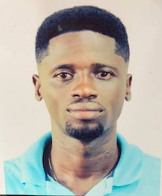

Emmanuel Kwasi Frempong | WDD 130
Hello! My name is Emmanuel Kwasi Frempong. I am a proud Ghanaian and I hold a bachelor’s degree in Natural Resource Management. I have over five years of combined experience in hospitality and FMCG sales, with strong skills in client relationship management, sales growth, and premium brand visibility. Beyond this, I am deeply passionate about cybersecurity and software engineering, and I am actively building my expertise in these fields to create innovative solutions and protect digital systems. I am committed to personal growth, faith, and resilience, with a vision of building a meaningful career that blends technology, security, and service.